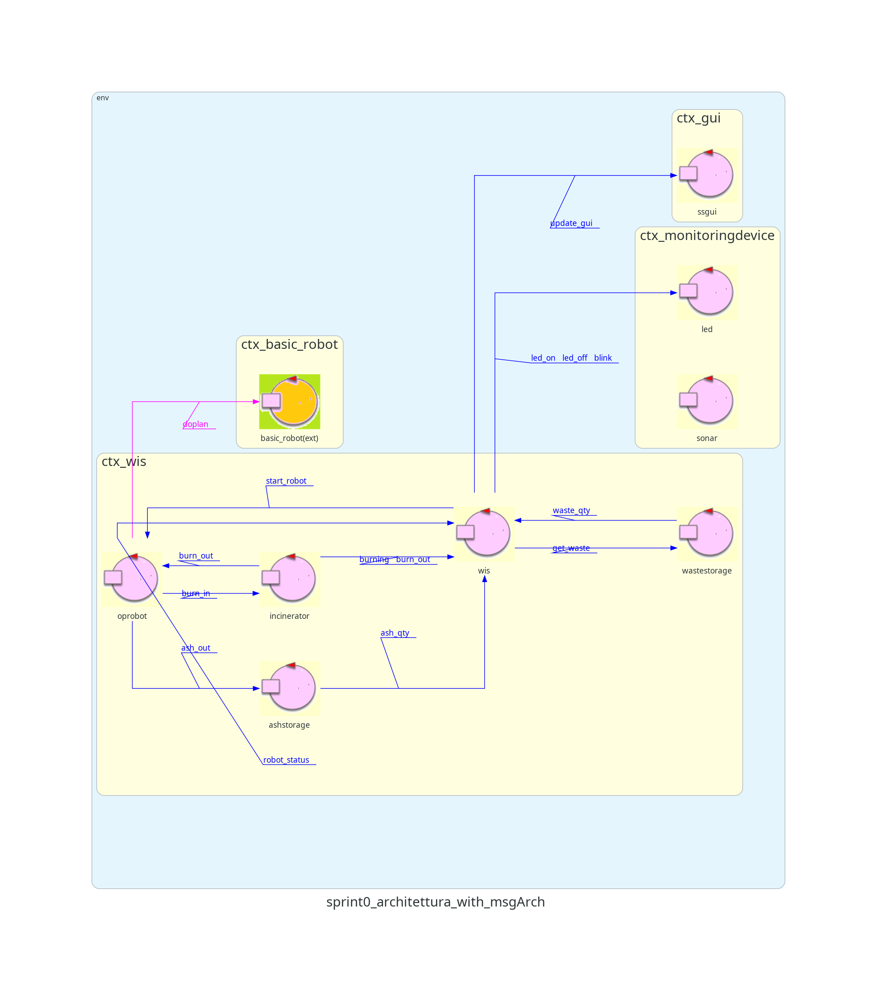

Analisi del problema
Rappresentazione dell'area di servizio
La mappa della stanza può essere rappresentata tramite un piano cartesiano. In questo modo possiamo formalizzare
il concetto di posizione, intesa come una coppia di coordinate cartesiane.
Per semplicità,
HOME è l'origine(0,0).
La stanza viene quindi suddivisa in una griglia, dove ciascuna cella è un quadrato di lato D, ovvero il diametro
dell'
OpRobot.
Nella stanza sono presenti diverse posizioni rilevanti:
-
HOME
-
WASTEIN
-
BURNIN
-
BURNOUT
-
ASHOUT
inserire immagine
Ciascuna di esse sarà rappresentata da una o più celle all'interno della mappa, che decideremo dopo aver creato
la configurazione della mappa.
Per creare la mappa, utilizzeremo un software fornito dal cliente:
MapBuilder24 (da mettere link) che
andrà a generare un file di configurazione che rappresenterà la stanza e i suoi ostacoli.
inserire code block mappa: Map.text
Per rappresentare le
posizioni rilevanti sulla mappa, verrà utilizzata una
base di conoscenza
prolog contenente un insieme di triple:
(x,y,NOME_POSIZIONE).
Questo va ad aggiungere un nuovo requisito, ovvero una nuova funzionalità che dato il nome di una posizione ne
restituisca le coordinate.
In questo modo si va ad evitare di assegnare ad un solo attore tutta l'informazione relativa alle posizioni,
dando la possibilità
a tutti i componenti di accedervi (sia il
WIS che
OpRobot necessitano di queste
informazioni).
WIS
Il
WIS è gia stato identificato come attore nella fase precedente e assume il ruolo di
"controllore/gestore" del sistema che fa da coordinatore delle comunicazioni.
GUI
La GUI viene modellata come una Facade, dato che abbiamo bisogno di un'interfaccia grafica che mostri all'utente
le informazioni aggiornate relative allo stato del sistema.
Si è deciso di utilizzare una Facade perchè il linguaggio QAK (da noi scelto per questo progetto) possiede le
capacità espressive per dichiarare e comunicare con Facade ad alto livello
senza preocupparci del livello di implemetazione sottostante.
OpRobot
Il cliente mette a disposizione un
DDR Robot, l'attuatore fisico del comportamento dell'
OpRobot
che è un entità astratta che incapsula la logica del robot, e il suo sw di controllo (
BasicRobot).
L'
OpRobot sarà rappresentato da un attore, poichè il sw fornito dal cliente, che controlla il DDR,
comunica solamente tramite scambio di messaggi. Di conseguenza è necessario modellare
OpRobot affinché
sia in grado di utilizzare
l'interfaccia offerta da
BasicRobot per comandare il robot fisico.
In particolare, essa verrà utilizzata per spostare il robot da una posizione rilevante ad un'altra (
informazione ottenuta tramite la base di conoscenza ).
Il componente di cui si farà uso è il
Planner24 (mettere link), che permette di costruire dinamicamente
una
sequenza di mosse attraverso le quali il robot può muoversi dalla posizione corrente ad un’altra posizione sulla
mappa della stanza costruita in precedenza.
Per rappresentare lo spostamento di 1 RP da una parte all'altra dell'area di servizio,
OpRobot mantiene
tramite una variabile l'informazione relativa al possedimento o meno di un pacchetto in un determinato momento
(un variabile booleana).
Inoltre, deve comunicare al WIS due informazioni: la sua
posizione attuale ed il
lavoro
che sta svolgendo. La prima tramite coordinate cartesiane, mentre la seconda viene rappresentata da vari stati
in cui il robot può trovarsi:
-
WAITING: il robot è nella home aspettando che il WIS gli dia il via
-
MOVE_TO_WS
-
WITHDRAW_RP_FROM_WS
-
MOVE_TO_INCINERATOR
-
DEPOSIT_RP_INTO_INCINERATOR
-
MOVING_TO_HOME
-
WAITING_FOR_BURN
-
WITHDRAW_ASHES_FROM_INCINERATOR
-
MOVING_TO_AS
-
DEPOSIT_ASHES_INTO_AS
-
BACK_HOME
Waste Storage
Il
Waste Storage viene modellato come un attore perchè è un'entità che deve essere sempre attiva per
poter ricevere messaggi e rispondere di conseguenza.
Al suo interno contiene una
Scale modellata come un POJO (una variabile), il cui compito è quello tenere
traccia del peso degli RP nel
Waste Storage.
Interagisce sia con l'entità esterna sia con l'OpRobot che rispettivamente depositano e prevelevano un RP alla
volta.
Ash Storage
L'
Ash Storage viene modellato come attore poichè è un'entità che scambia messaggi con il robot e con
l'entità esterna quando si richiede il prelievo delle ceneri.
Deve mantenere al suo interno l'informazione relativa al livello di ceneri depositate (informazione che sarà
necessaria al Sonar), viene utilizzata una variabile intera a questo scopo.
Una entità esterna in istanti di tempo non precisati può prelevare tutta la cenere dall'ash storage svuotandolo
completamente.
Monitoring Device
Come accennato nella fase precedente, il monitoring device, essendo fisicamente su un Raspberry PI, gira in un
nodo (contesto) separato ed è formato da due componenti:
Led
Il Led è un attore che può trovarsi in uno di 3 stati (in base alle informazioni ricevute dal WIS)
-
ON: quando l’Incinerator sta bruciando un RP
-
OFF: quando l’Incinerator non è in funzione
-
Blink: quando l’Ash Storage è pieno o vuoto
Sonar
Il Sonar è un attore il cui unico compito è misurare il livello delle ceneri nell'
Ash Storage e
comunicare quanto rilvevato al
WIS.
Contesti
I 3 nuovi attori identificati nell'analisi del problema sono stati inseriti in
ctx_wis poichè non sono
stati trovati motivi per metterli in contesti separati.
La gui essendo una facade, è per definizione assegnata ad un contesto separato.
-
ctx_wis: WIS + Incinerator + OpRobot + Waste Storage +
Ash Storage
-
ctx_basic_robot: il Basic Robot per sua definizione è già presente in un contesto separato
-
ctx_monitoringdevice: Led + Sonar
-
ctx_gui: contesto in cui sarà eseguita il facade.
In
rosso gli attori e contesti aggiunti in questa fase.
Interazioni/Messaggi
| Nome |
Tipo |
Mittente |
Destinatario |
| START_ROBOT |
Dispatch |
WIS |
OpRobot |
| Inviato quando il robot è in stato WAITING. Indica che esso può iniziare a muoversi
verso WASTEIN (il WIS ha verificato che il Waste Storage non è vuoto, l’Ash Storage non è pieno e
l’Incinerator non è in burning phase). |
| UPDATE_GUI |
Dispatch |
WIS |
SSGUI |
| Inviato ogni volta che la GUI deve essere aggiornata. Contiene diverse informazioni:
(NRP_WS, QTY_ASH, ISBURNING, ROBOT_STATUS) |
| ROBOT_STATUS |
UpdateResource |
OpRobot |
WIS |
| Inviato ogni volta che il robot cambia posizione e lavoro (informazione che deve essere
mantenuta all'interno dell'OpRobot), formato dai seguenti campi: (x,y,JOB) |
| WASTE_QTY |
UpdateResource |
Waste Storage |
WIS |
| Indica il peso in KG degli RP contenuti nel Waste Storage. |
| ASH_QTY |
UpdateResource |
Ash Storage |
WIS |
| Indica il livello di ceneri nell'Ash Storage. Tale valore viene misurato dal sonar del
monitoring device. |
| BURNING |
Dispatch |
Incinerator |
WIS |
| Indica al WIS che l'Incinerator è in burning phase. |
| BURN_OUT |
Dispatch |
Incinerator |
WIS + OpRobot |
| Indica che l'Incinerator ha finito di bruciare 1 RP, ovvero è passato BTIME
dall'inserimento del pacchetto ed è quindi finita la burning phase. |
| WASTE_IN |
Evento |
Entità esterna |
Waste Storage |
| Si verifica quando l'entità esterna vuole depositare 1 RP all'interno del Waste Storage.
Provoca l'incremento di 1 RP della capacità di quest'ultimo (+50 KG sulla Scale). |
| GET_WASTE |
Dispatch |
OpRobot |
Waste Storage |
| Inviato per rappresentare il prelievo di 1 RP dal Waste Storage quando il robot è
posizionato sulla porta WASTE_IN. Provoca il decremento di 1 RP della capacità di quest'ultimo (-50
KG sulla Scale). La variabile booleana dentro il robot viene messa a true. |
| TURN_ON |
Evento |
Entità esterna |
Incinerator |
| Indica l'accensione dell'Incinerator. |
| BURN_IN |
Dispatch |
OpRobot |
Incinerator |
| Inviato per rappresentare il deposito di 1 RP nell'Incinerator quando il robot si trova
in BURNIN. Alla ricezione del messaggio, l’Incinerator entra in burning phase (e manda il messaggio
BURNING al WIS). |
| ASH_OUT |
Dispatch |
OpRobot |
Ash Storage |
| Inviato per rappresentare il deposito della cenere corrispondente ad 1 RP
nell'AshStorage. Il robot si trova in posizione ASHOUT (il sonar si aggiornerà di conseguenza). La
variabile booleana dentro il robot viene messa a false.
|
| GET_ASH |
Evento |
Entità esterna |
Ash Storage |
| Si verifica quando l'entità esterna rimuove la cenere dall'Ash Storage. Provoca
l'aggiornamento del valore misurato dal sonar. |
| LED_ON |
Dispatch |
WIS |
LED |
| Inviato per indicare che l'Incinerator sta bruciando 1 RP, ovvero è in burning phase.
|
| LED_OFF |
Dispatch |
WIS |
LED |
| Inviato per indicare che l'Incinerator non è in un burning phase. |
| BLINK |
Dispatch |
WIS |
LED |
| Inviato per indicare che l'Ash Storage è pieno (quando il valore misurato dal sonar è
minore di DLIMIT) oppure è vuoto (in questo caso, quando il
valore misurato dal sonar è uguale ad un valore DMAX allora l'Ash Storage è vuoto). |
Architettura Logica

Test Plans
|
Test
|
Attori
|
Descrizione
|
File
|
|
|
a
|
a
|
a
|